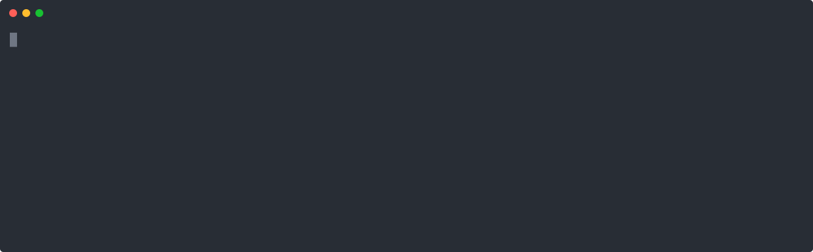
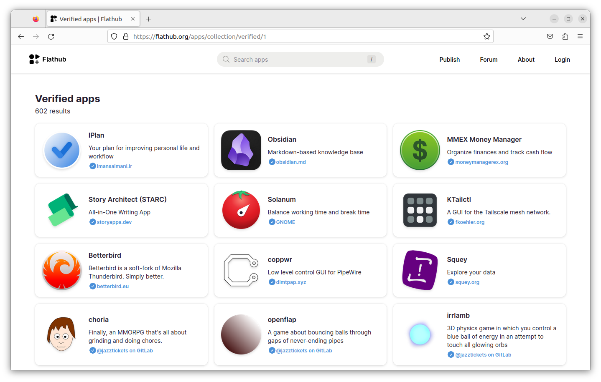
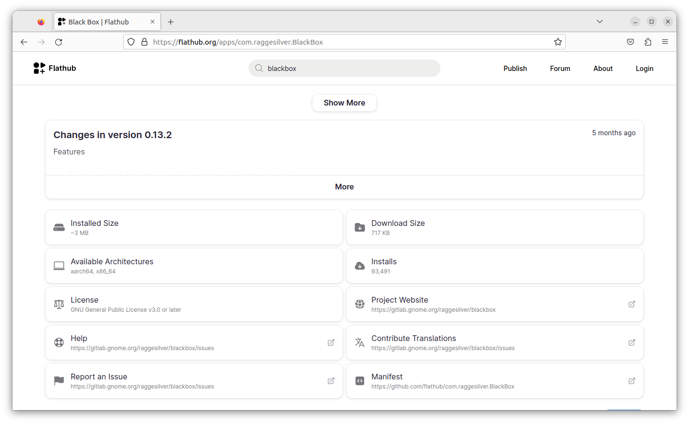
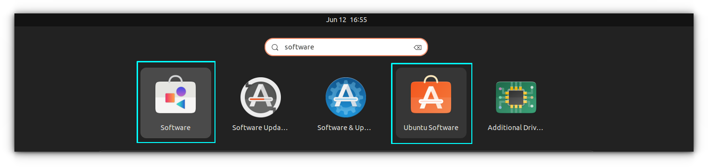
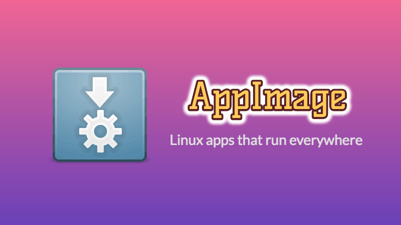

The Linux world has three 'universal' packaging formats that allow running on 'any' Linux distribution; Snap, Flatpak and AppImage.
Ubuntu comes baked-in with Snap but most distributions and developers avoid it because of its close source nature. They prefer Fedora's Flatpak packaging system.
As an Ubuntu user, you are not restricted to Snap. You also can use Flatpak on your Ubuntu system.
In this tutorial, I'll discuss the following:
- Enabling Flatpak support on Ubuntu
- Using Flatpak commands to manage packages
- Getting packages from Flathub
- Add Flatpak packages to Software Center
Sounds exciting? Let's see them one by one.
Installing Flatpak on Ubuntu
You can easily install Flatpak using the following command:
sudo apt install flatpakFor Ubuntu 18.04 or older versions, use PPA:
sudo add-apt-repository ppa:flatpak/stable
sudo apt update
sudo apt install flatpakAdd Flathub repo
You have installed Flatpak support in your Ubuntu system. However, if you try to install a Flatpak package, you'll get 'No remote refs found' error. That's because there are no Flatpak repositories added and hence Flatpak doesn't even know from where it should get the applications.
Flatpak has a centralized repository called Flathub. A number of Flatpak applications can be found and downloaded from here.
You should add the Flathub repo to access those applications.
flatpak remote-add --if-not-exists flathub https://flathub.org/repo/flathub.flatpakrepo

Once Flatpak is installed and configured, restart your system. Otherwise, installed Flatpak apps won't be visible on your system menu.
Still, you can always run a flatpak app by running:
flatpak run <package-name>Common Flatpak Commands
Now that you have Flatpak packaging support installed, it's time to learn some of the most common Flatpak commands needed for package management.
Search for a Package
Either use Flathub website or use the following command, if you know the application name:
flatpak search <package-name>Except for searching a flatpak package, on other instances, the <package-name> refers to the proper Flatpak package name, like com.raggesilver.BlackBox (Application ID in the above screenshot). You may also use the last word Blackbox of the Application ID.
Install a Flatpak package
Here's the syntax for installing a Flatpak package:
flatpak install <remote-repo> <package-name>Since almost all the times you'll be getting applications from Flathub, the remote repository will be flathub:
flatpak install flathub <package-name>In some rare cases, you may install Flatpak packages from the developer's repository directly instead of Flathub. In that case, you use a syntax like this:
flatpak install --from https://flathub.org/repo/appstream/com.spotify.Client.flatpakrefInstall a package from flatpakref
This is optional and rare too. But sometime, you will get a .flatpakref file for an application. This is NOT an offline installation. The .flatpakref has the necessary details about where to get the packages.
To install from such a file, open a terminal and run:
flatpak install <path-to-flatpakref file>Run a Flatpak application from the terminal
Again, something you won't be doing it often. Mostly, you'll search for the installing application in the system menu and run the application from there.
However, you can also run them from the terminal using:
flatpak run <package-name>List installed Flatpak packages
Want to see which Flatpak applications are installed on your system? List them like this:
flatpak listUninstall a Flatpak package
You can remove an installed Flatpak package in the following manner:
flatpak uninstall <package-name>If you want to clear the leftover packages and runtimes, that are no longer needed, use:
flatpak uninstall --unusedIt may help you save some disk space on Ubuntu.
Flatpak commands summary
Here's a quick summary of the commands you learned above:
| Usage | Command |
|---|---|
| Search for Packages | flatpak search |
| Install a Package | flatpak install |
| List Installed Package | flatpak list |
| Install from flatpakref | flatpak install <package-name.flatpakref> |
| Uninstall a Package | flatpak uninstall |
| Uninstall Unused runtimes and packages | flatpak uninstall --unused |
Using Flathub to explore Flatpak packages
I understand that searching for Flatpak packages through the command line is not the best experience and that's where the Flathub website comes into picture.
You can browse the Flatpak application on Flathub, which provides additional details like verified publishers, total number of downloads etc.
You'll also get the commands you need to use for installing the applications at the bottom of the application page.


Application Details in Flathub Official Website
Bonus: Use Software Center with Flatpak package support
You can add the Flatpak packages to the GNOME Software Center application and use it for installing packages graphically.
There is a dedicated plugin to add Flatpak to GNOME Software Center.
Since Ubuntu 20.04, the default software center in Ubuntu is Snap Store and it does not support flatpak integration. So, installing the below package will result in two software centers simultaneously: one Snap and another DEB.

sudo apt install gnome-software-plugin-flatpakConclusion
You learned plenty of things here. You learned to enable Flatpak support in Ubuntu and manage Flatpak packages through the command line. You also learned about the integration with the Software Center.
I hope you feel a bit more comfortable with Flatpaks now. Since you discovered one of the three universal packages, how about learning about Appimages?

Let me know if you have questions or if you face any issues.